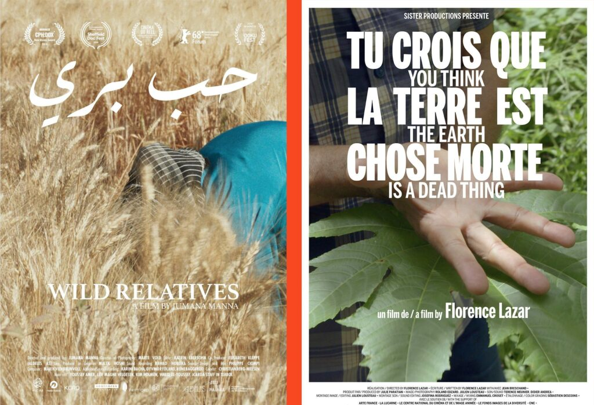

Wild Relatives (2018) by Jumana Manna, 64min, HD video Deep in the earth beneath the Arctic permafrost, seeds from all over the world are stored in the Svalbard Global Seed Vault to provide a backup should disaster strike. Wild Relatives starts from an event that has sparked media interest worldwide: in 2012 an international agricultural research center was forced to relocate from Aleppo to Lebanon due to the Syrian Revolution turned war, and began a laborious process of planting their seed collection from the Svalbard back-ups. Following the path of this transaction of seeds between the Arctic and Lebanon, a series of encounters unfold a matrix of human and non-human lives between these two distant spots of the earth. It captures the articulation between this large-scale international initiative and its local implementation in the Bekaa Valley of Lebanon, carried out primarily by young migrant women. The meditative pace patiently teases out tensions between state and individual, industrial and organic approaches to seed saving, climate change and biodiversity, witnessed through the journey of these seeds. Watch the trailer: https://vimeo.com/286869277 You Think That the Earth Is a Dead Thing (2019) by Florence Lazar, 70min, HD video The film looks at the “global ecological crisis” from the perspective of the island of Martinique. In reflecting on ecology, it not only raises issues concerning nature and damaged ecosystems, but, moreover, focuses on spaces of resistance to the crisis in which women and men acknowledge and act from the historical perspective of colonialism, where ecological struggle and the colonial past are intrinsically linked. The context is one of widespread pollution resulting from the intensive use of chlordecone. For over twenty years, the carcinogenic insecticide was used by a small group of descendants of the first colonial slaveholders to settle in the French West Indies, in order to protect the banana plantations that dominate Martinique’s export industry. The various protagonists of the film explore alternative approaches in the fight against environmental destruction using ancestral practices and knowledge. Thus, the portrayal of nature constantly shifts: sometimes it appears domesticated and exploited on a massive scale, at other times, contaminated by unseen toxic substances, or, again, as an ally in the struggle for survival. Watch the trailer: https://vimeo.com/367965862The screening was organized as part of teh festival 'A Matter of (In)digestions' which was held in October-November 2020 both online and in several venues around Amsterdam.
About the artists
Florence Lazar is an artist, filmmaker and photographer. In her work, she seeks to reveal the emergence of a way of speaking, the gestures of an individual or a group in a precise geographical and social context. She is interested in what conditions people’s gaze, in their strategies of display and the ways people have of grasping objects, which transform speech into political action. Her films are often shot in places where conflicts or crises have reconfigured everyone’s narratives. Historical investigation and the processes by which history is transmitted are the vectors of her work.
Jumana Manna is a visual artist working primarily with film and sculpture. Her work explores how power is articulated through relationships, often focusing on the body and on materiality in relation to narratives of nationalism, and histories of place. She was awarded the A.M. Qattan Foundation’s Young Palestinian Artist Award in 2012 and the Ars Viva Prize for Visual Arts in 2017. Manna has participated in various film festivals including the 54th and 56th Viennale International Film Festival, the 66th and 68th Berlinale, and CPH:DOX 2018 where her film Wild Relatives won the New:Visions award; and in exhibitions including at Henie Onstad Museum, Norway, 2018; Mercer Union, Canada, 2017; Jeu de Paume and CAPC Bordeaux, France, 2017; SculptureCenter, USA, 2014; Marrakech Biennale 6, 2016; and The Nordic Pavilion at the 57th Venice Biennale. Manna was raised in Jerusalem and is based in Berlin.
Links
Proposing a reflection on food logistics and the agency of plants, the screening features two films by Florence Lazar, You Think That the Earth Is a Dead Thing (2019), and Jumana Manna, Wild Relatives (2018). Both films address from different perspectives the legacy and genealogy of the colonial logic of exploitation. They question the rise of contemporary monoculture and its tensions with ancestral knowledge, local scientific practices and traditional agriculture. Remarkably, the films are also an ode to forms of resistance that are being organized around the globe. Both directors will join the screening and the discussion that will follow.